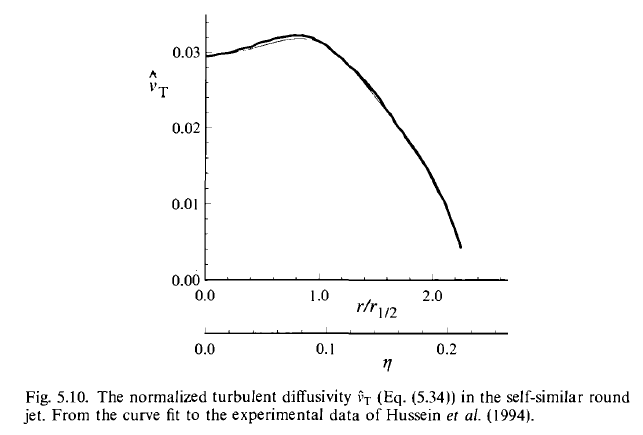
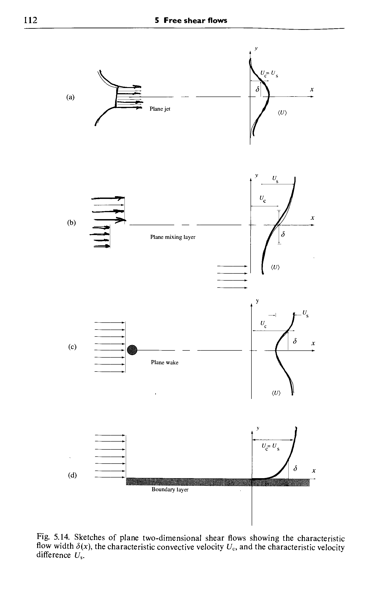

In Lagrange system, the continuity idea is as follows
\[ \begin{equation} \frac{d m}{d t} = 0 \end{equation} \]
In Euler system, the differential form is as follows
\[ \begin{align} \frac{\partial \rho}{\partial t} + \nabla \cdot \big ( \rho \vec{u} \big ) = 0 \end{align} \]
By Reynolds transport equation, the integral form of continuity equation in Lagrange system can be transformed to the differential form in Eluer system.
Physical idea, in Lagrange system, is as follows
\[ \begin{equation} \frac{d}{d t} \iiint_{V(t)} \rho \vec{u} dV = \sum F \end{equation} \]
In Euler system, the differential form is as follows
\[ \begin{equation} \rho \frac{d u_{i}}{d t} = \rho f_{i} + \frac{\partial \sigma_{ji}}{\partial x_{j}} \end{equation} \]
Physical idea, in Lagrange system, is as follows
\[ \begin{align} \frac{d}{d t} \iiint \rho (e + 1/2 \vec{u} \cdot \vec{u}) dV = \sum W + \sum Q \end{align} \]
In Euler system, the differential form is as follows
\[ \begin{align} \rho \frac{d e}{d t} + \rho u_{i} \frac{d u_{i}}{d t} = \rho f_{i} u_{i} + u_{i} \frac{\partial \sigma_{ji}}{\partial x_{j}} + \sigma_{ji} \frac{\partial u_{i}}{\partial x_{j}} + Q - \frac{\partial q_{i}}{\partial x_{i}} \end{align} \]
Combine the momentum equation, we can reduce the momentum part and get
\[ \begin{align} \rho \frac{d e}{d t} = \sigma_{ji} \frac{\partial u_{i}}{\partial x_{j}} + Q - \frac{\partial q_{i}}{\partial x_{i}} \end{align} \]
Expand
\[ \begin{align} \sigma_{ij} = - p \delta_{ij} + \tau_{ij} \end{align} \]
\(\tau_{ij}\) means a stress in the direction of j exerted on a plane perpendicular to the axis of i.
Constitutive equation is to find the relation between surface forces \(\sigma_{ij}\) and the symmetric tensor \(e_{ij}\).
Deviatoric stress tensor \(\tau_{ij}\) relates with the velocity gradient \(\frac{\partial u_{i}}{\partial x_{j}}\). So the key is the relation between \(\tau_{ij}\) and \(e_{ij}\).
In tensor analysis, they have the following relation.
\[ \begin{align} \tau_{ij} = \lambda \delta_{ij} \nabla \cdot \vec{u} + 2 \mu e_{ij} \end{align} \]
\(\mu\) is the dynamic viscosity, \(\nu = \mu / \rho\) is the kinematic viscosity.
\(\rho(\vec{x}, t), \vec{U}(\vec{x}, t)\)are Eulerian fields, indexed by position vector\(\vec{x}\)in an inertial frame.
In Lagrangian description, define fluid particle: a point moving with the local fluid velocity.
\(\vec{X}^{+} (t, \vec{Y})\)denotes the position at time t of the fluid particle that is located at\(\vec{Y}\)at the specified fixed reference time\(t_{0}\).
Mathematical definition of\(\vec{X}^{+} (t, \vec{Y})\)
\[ \begin{align} \vec{X}^{+} (t_{0}, \vec{Y}) &= \vec{Y} \\ \frac{\partial }{\partial t} \vec{X}^{+} (t, \vec{Y}) &= \vec{U} ( \vec{X}^{+} (t, \vec{Y}), t) \\ \end{align} \]
Given Euler velocity field\(\vec{U} (\vec{x}, t)\), we get\(\vec{X}^{+} (t_{0}, \vec{Y})\).
Lagrangian fields of\(\rho, U\)are indexed by position\(\vec{Y}\)at the reference time\(t_{0}\). Hence,\(\vec{Y}\)is called the Lagrangian coordinate or the material coordinate.
Define the substantial derivative.
\[ \begin{align} \frac{\partial}{\partial t} \rho^{+} (t, \vec{Y}) &= \frac{\partial}{\partial t} \rho ( \vec{X}^{+} (t, \vec{Y}), t ) \\ &= \Big ( \frac{\partial}{\partial t} \rho (\vec{x}, t) \Big )_{x = \vec{X}^{+} (t, \vec{Y})} + \frac{\partial}{\partial t} \vec{X}^{+}_{i} (t, \vec{Y}) \Big ( \frac{\partial}{\partial x_{i}} \rho (\vec{x}, t) \Big )_{x = \vec{X}^{+} (t, \vec{Y})} \\ &= \Big ( \frac{\partial}{\partial t} \rho (\vec{x}, t) + U_{i} (\vec{x}, t) \frac{\partial}{\partial x_{i}} \rho (\vec{x}, t) \Big )_{x = \vec{X}^{+} (t, \vec{Y})} \\ &= \Big ( \frac{D}{D t} \rho (\vec{x}, t) \Big )_{x = \vec{X}^{+} (t, \vec{Y})} \\ \end{align} \]
Exercise 2.2 introduces a question: how is taylor series of vector function?
The continuity equation is omitted.
A useful interpretation is in terms of the specific volume of fluid\(\vartheta (x, t) = 1/ \rho (x, t)\). And eq (2.18) gives some physical interpretation.
Eq (2.11) explains solenoidal or divergence free velocity field.
The determinant of Jacobian
\[ \begin{align} J (t, \vec{Y}) \equiv det \Big ( \frac{\partial \vec{X}^{+}_{i} (t, \vec{Y})}{\partial \vec{Y}_{j}} \Big ) \end{align} \]
gives the volume ratio between an infinitesimal material volume\(d V(t)\)at time\(t\), and its volume\(d V(t_{0})\)at time\(t_{0}\).
Nothing.
In constant density flow, pressure can not be related to density and temperature by an equation of state. A different understanding is required.1
eq (2.54)
Take curl of NS (2.35). Then get (2.60). Recall (2.16), the evolution of an infinitesimal line element. (2.16) only miss the viscous term. In inviscid flow, vorticity behaves like this.2
The term \(\vec{\omega} \cdot \Delta \vec{U}\) is called vortex stretching.
In 2D, vortex stretching term vanishes, and vorticity evolves as conserved scalars.
eq (2.66), (2.67) are Stokes form of NS.
Note some terms
To be added.
The issue is the inconsistency between the random nature of turbulent flows and the deterministic nature of classical mechnics embodied in NS.
For larminar flow, we use theory to calculate \(U\) and perform an experiment to measure \(U\). Both agree.
For turbulent flow, we still apply NS, but the aim is different. Aimed to predict a particular value of \(U\) is certain to be wrong. However, theory aim at determining the probability.
Sample space. \(V\) is the sample space variable corresponding to \(U\).
\[ \begin{align} B \equiv \{ U < V_{b} \} \end{align} \]
Probability of the event \(B\) is written as
\[ \begin{align} p &= P(B) = P \{ U < V_{b} \} \\ 0 & \leq p \leq 1 \\ \end{align} \]
The cumulative distribution function (CDF)
\[ \begin{align} F(V) \equiv P \{ U < V \} \end{align} \]
Properties of CDF are
\[ \begin{align} F(-\infty) &= 0, \quad F(\infty) = 1 \\ F(V_{b}) & \geq F(V_{a}) \quad for \quad V_{b} > V_{a} \\ F(V_{b}) &- F(V_{a}) = P \{ V_{a} \leq U \leq V_{b} \} \geq 0 \\ \end{align} \]
The properties density function (PDF)
\[ \begin{align} f(V) \equiv \frac{d F(V)}{d V} \end{align} \]
Properties of PDF are
\[ \begin{align} f(- \infty) &= f(\infty) = 0 \\ f(V) &\geq 0 \\ \int^{\infty}_{-\infty} f(V) dV &= 1 \\ \end{align} \]
Statistically identical ref P67.
Mean
Mean is defined as
\[ \begin{align} \langle U \rangle \equiv \int^{\infty}_{-\infty} V f(V) dV \end{align} \]
Properties are
Variance
Variance is defined as
\[ \begin{align} var(U) &\equiv \langle u^{2} \rangle \\ &= \int^{}_{} \big ( V - \langle U \rangle \big )^{2} f(V) dV \\ u &\equiv U - \langle V \rangle \\ \end{align} \]
Properties are
\[ \begin{align} Q &= a + b U \\ var(Q) &= b^{2} var(U) \\ var(U) &= \langle U^{2} \rangle - \langle U \rangle^{2} \\ \end{align} \]
Standard deviation is defined as
\[ \begin{align} sdev(U) \equiv \sqrt{var(U)} = \langle u^{2} \rangle^{1/2} \end{align} \]
\(n\)th central moment is defined as
\[ \begin{align} \mu_{n} \equiv \langle u^{n} \rangle \end{align} \]
To be added.
Joint CDF
\[ \begin{align} F_{12}(V_{1}, V_{2}) &= P \{ U_{1} < V_{1}, U_{2} < V_{2} \} \\ F_{12}(\infty, V_{2}) &= P \{ U_{1} < \infty, U_{2} < V_{2} \} \\ &= P \{ U_{2} < V_{2} \} = F_{2} (V_{2}) \\ \end{align} \]
\(F_{2} (V_{2})\) is called the marginal CDF.
Joint PDF
\[ \begin{align} f_{12}(V_{1}, V_{2}) &\equiv \frac{\partial^{2}}{\partial V_{1} \partial V_{2}} F_{12} (V_{1}, V_{2}) \\ f_{12} (V_{1}, V_{2}) &\geq 0 \\ \int^{\infty}_{-\infty} f_{12} (V_{1}, V_{2}) d V_{1} &= f_{2} (V_{2}) \\ \int^{\infty}_{-\infty} \int^{\infty}_{-\infty} f_{12} (V_{1}, V_{2}) dV_{1} dV_{2} &= 1 \\ \end{align} \]
\(f_{2}(V_{2})\) is the marginal PDF of \(U_{2}\).
If \(Q(U_{1}, U_{2})\) is a function of the random variables, its mean is defined by
\[ \begin{align} \langle Q(U_{1}, U_{2}) \rangle \equiv \int^{\infty}_{-\infty} \int^{\infty}_{-\infty} Q(V_{1}, V_{2}) f_{12} (V_{1}, V_{2}) dV_{1} dV_{2} \end{align} \]
The covariance of \(U_{1}, U_{2}\) is
\[ \begin{align} cov (U_{1}, U_{2}) \equiv \langle u_{1} u_{2} \rangle \end{align} \]
The correlation coefficient is
\[ \begin{align} \rho_{12} \equiv \frac{\langle u_{1} u_{2} \rangle}{[\langle U^{2}_{1} \rangle \langle u^{2}_{2} \rangle]^{1/2}} \end{align} \]
Cauchy-Schwartz inequality is
\[ \begin{align} -1 \leq \rho_{12} \leq 1 \end{align} \]
Conditional PDF is defined as
\[ \begin{align} f_{2|1}(V_{2} | V_{1}) &\equiv f_{12} (V_{1}, V_{2}) / f_{1} (V_{1}) \\ \int^{\infty}_{-\infty} f_{2|1} (V_{2} | V_{1}) dV_{2} &= \int^{\infty}_{-\infty} f_{12} (V_{1}, V_{2}) / f_{1} (V_{1}) dV_{2} \\ &= \frac{1}{f_{1}(V_{1})} \int^{\infty}_{-\infty} f_{12} (V_{1}, V_{2}) dV_{2} = 1 \end{align} \]
The conditional mean is defined as (3.97) ref P85.
The concept of independence is (3.98), (3.99) ref P85.
Let random variables \(\{ U^{(1)}, U^{(2)}, ... \}\) are independent and identically distributed (i.i.d) where \(U^{(n)}\) denotes \(U\) on the \(n\)th repetition.
The ensemble average is a random variable, defined by
\[ \begin{align} \langle U \rangle_{N} &\equiv \frac{1}{N} \sum^{N}_{n=1} U^{(n)} \\ \langle \langle U \rangle_{N} \rangle &= \langle U \rangle \\ var(\langle U \rangle_{N}) &= \langle (\langle U \rangle_{N} - \langle U \rangle)^{2} \rangle \\ &= \langle \big ( \frac{1}{N} \sum^{N}_{n=1} U^{(n)} - \langle U \rangle \big )^{2} \rangle \\ &= \frac{1}{N^{2}} \langle \Big ( \sum^{N}_{n=1} \big ( U^{(n)} - \langle U \rangle \big ) \Big )^{2} \rangle \\ &= \frac{1}{N^{2}} \sum^{N}_{n=1} \langle \big ( U^{(n)} - \langle U \rangle \big )^{2} \rangle, \quad since \quad \langle u^{(n)} u^{(m)} \rangle = 0 \\ &= \frac{1}{N} var(U) \\ &= \frac{\sigma^{2}_{u}}{N} \\ \hat{U} &= \frac{\langle U \rangle_{N} - \langle \langle U \rangle_{N} \rangle}{\sqrt{var(\langle U \rangle_{N})}} \\ &= \frac{\langle U \rangle_{N} - \langle U \rangle}{\sigma_{u} / N^{1/2}} \\ \end{align} \]
where \(\hat{U}\) is a standard random variable (i.e. \(\langle \hat{U} \rangle = 0, \langle \hat{U}^{2} \rangle = 1\)).
The central-limit theorem states, as \(N \rightarrow \infty\),
\[ \begin{align} \hat{f}(V) = \frac{1}{\sqrt{2 \pi}} exp(-\frac{1}{2} V^{2}) \end{align} \]
which is a standardized normal distribution.
Given a general set of \(D\) random variables \(\vec{U} = \{ U_{1}, U_{2}, ..., U_{D} \}\), the mean and fluctuation of the random vector \(\vec{U}\) are denoted by
\[ \begin{align} \vec{mu} &= \langle \vec{U} \rangle \\ \vec{u} &= \vec{U} - \langle \vec{U} \rangle \\ \end{align} \]
The covariance matrix is
\[ \begin{align} C = \langle \vec{u} \vec{u}^{T} \rangle \end{align} \]
If \(\vec{U} = \{ U_{1}, U_{2}, ..., U_{D} \}\) is joint-normally distributed, then its joint PDF is (3.116) ref P88.
Joint normal PDF of the pair \(\{ U_{1}, U_{2} \}\) in terms of \(\langle u^{2}_{1} \rangle, \langle u^{2}_{2} \rangle, \rho_{12}\) is (3.118) ref P88.
Properties are ref P89.
Others are to be added.
Consider a random variable, but as a function of time, i.e. \(U(t)\). Such a time dependent random variable is called a random process.
Characterize random process by one-time CDF
\[ F(V, t) \equiv P \{ U(t) < V \} \]
or by one-time PDF
\[ f(V; t) \equiv \frac{\partial F(V, t)}{\partial V} \]
Statistically stationary ref P92.
Autovariance is defined as
\[ R(s) \equiv \langle u(t) u(t+s) \rangle \]
or in normalized form, the autocorrelation function is defined as
\[ \rho(s) \equiv \frac{\langle u(t) u(t+s) \rangle}{\langle u^{2}(t) \rangle} \]
The autocorrelation function is the correlation coefficient between time \(t\) and \(t+s\).
For process arising in turbulent flows, we expect the correlation to diminish as \(s\) increases. \(\rho(s)\) decreases surfficiently rapidly that
\[ \bar{\tau} \equiv \int^{\infty}_{0} \rho(s) ds \]
converges, then \(bar{\tau}\) is the integral timescale of the process.
Frequency spectrum is defined as
\[ \begin{align} E(\omega) &\equiv \frac{1}{\pi} \int^{\infty}_{-\infty} R(s) e^{-i \omega s} ds \\ &= \frac{2}{\pi} \int^{\infty}_{0} R(s) cos(\omega s) ds \\ \end{align} \]
Properties are ref P95.
\[ \begin{align} U_{i} = \langle U_{i} \rangle + u_{i} \end{align} \]
The average quantity\(\langle U_{i} \rangle\)is determined by either time averaging, spatial averaging or ensemble averaging.
NS equation is as follows
\[ \begin{align} \frac{\partial U_{i}}{\partial x_{i}} &= 0 \\ \rho \frac{D U_{i}}{D t} &= - \frac{\partial p}{\partial x_{i}} + \mu \big ( \frac{\partial^{2} U_{i}}{\partial x_{j} \partial x_{j}} \big ) \\ \end{align} \]
Reynolds averaging as follows
\[ \begin{align} \frac{\partial (\langle U_{i} \rangle + u_{i})}{\partial x_{i}} &= 0 \\ \rho \Big [ \frac{\partial (\langle U_{i} \rangle + u_{i})}{\partial t} + (\langle U_{j} \rangle + u_{j}) \frac{\partial (\langle U_{i} \rangle + u_{i})}{\partial x_{j}} \Big ] &= - \frac{\partial (\langle P \rangle + \langle p \rangle)}{\partial x_{i} } + \mu \Big [ \frac{\partial^{2} (\langle U_{i} \rangle + u_{i})}{\partial x_{j} \partial x_{j}} \Big ] \\ \end{align} \]
By the rule of fractional derivative and the continuity equation, we have
\[ \begin{align} \frac{\partial (\langle U_{i} \rangle + u_{i})}{\partial x_{i}} &= 0 \\ \rho \Big [ \frac{\partial (\langle U_{i} \rangle + u_{i})}{\partial t} + \frac{\partial (\langle U_{j} \rangle + u_{j}) (\langle U_{i} \rangle + u_{i})}{\partial x_{j}} \Big ] &= - \frac{\partial (\langle P \rangle + \langle p \rangle)}{\partial x_{i} } + \mu \Big [ \frac{\partial^{2} (\langle U_{i} \rangle + u_{i})}{\partial x_{j} \partial x_{j}} \Big ] \\ \end{align} \]
Employ the ensemble rule of averaging
\[ \begin{align} \langle \langle a \rangle \rangle &= \langle a \rangle \\ \langle a+b \rangle &= \langle a \rangle + \langle b \rangle \\ \langle a \langle b \rangle \rangle &= \langle a \rangle \langle b \rangle \\ \end{align} \]
we have
\[ \begin{align} \frac{\partial \langle U_{i} \rangle}{\partial x_{i}} &= 0 \\ \rho \Big ( \frac{\partial \langle U_{i} \rangle}{\partial t} + \frac{\partial \langle U_{i} \rangle \langle U_{j} \rangle}{\partial x_{j}} + \frac{\partial \langle u_{i} u_{j} \rangle}{\partial x_{j}} \Big ) &= - \frac{\partial \langle P \rangle}{\partial x_{i}} + \mu \frac{\partial^{2} \langle U_{i} \rangle}{\partial x_{j} \partial x_{j}} \\ \end{align} \]
Reduce the continuity part and rearrange
\[ \begin{align} \rho \Big ( \frac{\partial \langle U_{i} \rangle}{\partial t} + \langle U_{j} \rangle \frac{\partial \langle U_{i} \rangle}{\partial x_{j}} \Big ) = - \frac{\partial \langle p \rangle}{\partial x_{i}} + \frac{\partial}{\partial x_{j}} \Big ( \mu \frac{\partial \langle U_{i} \rangle}{\partial x_{j}} - \rho \langle u_{i} u_{j} \rangle \Big ) \end{align} \]
\(\frac{\partial \langle U_{i} \rangle}{\partial x_{j}}\)is the viscous normal and shear stress,\(\rho \langle u_{i} u_{j} \rangle\)is the Reynolds stress.
Utilize continuity equation,
\[ \begin{align} \frac{\partial}{\partial x_{i}} \big ( \frac{\partial \langle U_{i} \rangle}{\partial x_{j}} + \frac{\partial \langle U_{j} \rangle}{\partial x_{i}} \big ) &= \frac{\partial}{\partial x_{j}} \big ( \frac{\partial \langle U_{i} \rangle}{\partial x_{i}} \big ) + \frac{\partial^{2} \langle U_{j} \rangle}{\partial x_{i} \partial x_{i}} \\ &= 0 + \frac{\partial^{2} \langle U_{j} \rangle}{\partial x_{i} \partial x_{i}} \\ \end{align} \]
Rewrite Reynolds equations
\[ \begin{align} \rho \frac{\bar{D} \langle U_{j} \rangle}{\bar{D} t} = \frac{\partial}{\partial x_{i}} \Big [ \mu \big ( \frac{\partial \langle U_{i} \rangle}{\partial x_{j}} + \frac{\partial \langle U_{j} \rangle}{\partial x_{i}} \big ) - \langle p \rangle \delta_{ij} - \rho \langle u_{i} u_{j} \rangle \Big ] \end{align} \]
Three stresses: viscous stress, isotropic stress, Reynolds stress.
Reynolds stress stems from the momentum transfer by the fluctuating velocity field. Take mean of the rate of gain of momentum within a fixed volume, and we can see it.
Four equations contain five unknowns:\(\langle \vec{U} \rangle, \langle p \rangle, \langle u_{i} u_{j} \rangle\).
It’s symmetric
\[ \begin{align} \langle u_{i} u_{j} \rangle = \langle u_{j} u_{i} \rangle \end{align} \]
Diagonal components are normal stresses, off-diagonal components are shear stresses.
Turbulent kinetic energy is defined as
\[ \begin{align} k \equiv \frac{1}{2} \langle \vec{u} \cdot \vec{u} \rangle = \frac{1}{2} \langle u_{i} u_{i} \rangle \end{align} \]
Isotropy stress is
\[ \begin{align} \frac{2}{3} k \delta_{ij} \end{align} \]
Deviatoric anisotropy part is
\[ \begin{align} a_{ij} \equiv \langle u_{i} u_{j} \rangle - \frac{2}{3} k \delta_{ij} \end{align} \]
Normalized anisotropy tensor is
\[ \begin{align} b_{ij} = \frac{a_{ij}}{2 k} = \frac{\langle u_{i} u_{j} \rangle}{\langle u_{l} u_{l} \rangle} - \frac{1}{3} \delta_{ij} \end{align} \]
Then Reynolds stress is
\[ \begin{align} \langle u_{i} u_{j} \rangle &= \frac{2}{3} k \delta_{ij} + a_{ij} \\ &= 2 k ( \frac{1}{3} \delta_{ij} + b_{ij} ) \\ \end{align} \]
Only anisotropic part is effective in transporting mementum.
\[ \begin{align} \rho \frac{\partial \langle u_{i} u_{j} \rangle}{\partial x_{i}} + \frac{\partial \langle p \rangle}{\partial x_{j}} = \rho \frac{\partial a_{ij}}{\partial x_{i}} + \frac{\partial}{\partial x_{j}} \big ( \langle p \rangle + \frac{2}{3} \rho k \big ) \end{align} \]
showing that the isotropic component\(2/3 k\)can be absorbed in a modified mean pressure. (But what is momentum transport equation?)
Vorticity is 0, se we have
\[ \begin{align} 0 = \langle u_{i} \big ( \frac{\partial u_{i}}{\partial u_{j}} + \frac{\partial u_{j}}{\partial u_{i}} \big ) \rangle = \frac{\partial}{\partial x_{j}} \big ( \frac{1}{2} \langle u_{i} u_{j} \rangle \big ) - \frac{\partial}{\partial x_{i}} \langle u_{i} u_{j} \rangle \end{align} \]
from which follows the Corrsin-Kistler equation
\[ \begin{align} \frac{\partial}{\partial x_{i}} \langle u_{i} u_{j} \rangle = \frac{\partial k}{\partial x_{j}} \end{align} \]
which means Reynolds stress has the same effect as the isotropic stress, which can be absorbed in a modified pressure. Hence, Reynolds stresses arising from an irrotational field have absolutely no effect on the mean velocity field.
Similarly in the procedure to obtain Reynolds equations, the consevation equation for\(\phi(x, t)\)is
\[ \begin{align} \frac{\partial \phi}{\partial t} + \nabla \cdot (\vec{V} \phi) &= \Gamma \nabla^{2} \phi \\ \frac{\bar{D} \langle \phi \rangle}{\bar{D} t} &= \nabla \cdot \big ( \Gamma \nabla \langle \phi \rangle - \langle \vec{u} \phi^{\prime} \rangle \big ) \\ \end{align} \]
It’s valuable to study the physical model developed in early history.
The transport of the scalar flux\(\langle \vec{u} \phi^{\prime} \rangle\)is in the direction of\(- \nabla \langle \phi \rangle\). So
\[ \begin{align} \langle \vec{u} \phi^{\prime} \rangle = - \Gamma_{T} \nabla \langle \phi \rangle \end{align} \]
where\(\Gamma_{T}\)is the turbulent diffusivity.
Then the mean scalar conservation equation is
\[ \begin{align} \frac{\bar{D} \langle \phi \rangle}{\bar{D} t} &= \nabla \cdot \big ( \Gamma_{eff} \nabla \langle \phi \rangle \big ) \\ \Gamma_{eff} &= \Gamma + \Gamma_{T} \\ \end{align} \]
This hypothesis is mathematically analogous to the stress-rate-of-strain relation for Newtonian fluid. The deviatoric Reynolds stress
\[ \begin{align} - \rho \langle u_{i} u_{j} \rangle + \frac{2}{3} \rho k \delta_{ij} &= \rho \nu_{T} \Big ( \frac{\partial \langle U_{i} \rangle}{\partial x_{j}} + \frac{\partial \langle U_{j} \rangle}{\partial x_{i}} \Big ) \\ &= 2 \rho \nu_{T} \bar{S}_{ij} \\ \end{align} \]
where the position scalar coefficient\(\nu_{T}\)is the turbulent viscosity also called eddy viscosity.
Then the mean momentum equation is
\[ \begin{align} \rho \frac{\bar{D} \langle U_{j} \rangle}{\bar{D} t} &= \frac{\partial}{\partial x_{i}} \Big [ \nu_{eff} \big ( \frac{\partial \langle U_{i} \rangle}{\partial x_{j}} + \frac{\partial \langle U_{j} \rangle}{\partial x_{i}} \big ) \Big ] - \frac{1}{\rho} \frac{\partial}{\partial x_{j}} \big ( \langle p \rangle + \frac{2}{3} \rho k \big ) \\ \nu_{eff} &= \nu + \nu_{T} \\ \end{align} \]
The flow is statistically stationary and axisymmetric and the flow is completely defined by\(U_{J}, d, \nu\). So\(Re = U_{J} d / \nu\).
The mean axial velocity field is denoted by\(\langle U(x, r, \theta) \rangle\). Define the mean axial velocity in the centerline
\[ \begin{align} U_{0}(x) \equiv \langle U(x, 0, 0) \rangle \end{align} \]
Define the jet’s half width
\[ \begin{align} \langle U(x, r_{1/2}(x), 0) \rangle = \frac{1}{2} U_{0}(x) \end{align} \]
The mean velocity profile is self similar.
First define characteristic scales\(Q_{0}(x), \delta(x)\). Then scaled variables are defined as
\[ \begin{align} \xi &\equiv \frac{y}{\delta(x)} \\ \hat{Q}(\xi) = \tilde{Q}(\xi, x) &\equiv \frac{Q(x, y)}{Q_{0}(x)} \\ \end{align} \]
If the above are valid, then\(Q(x, y)\)is self similar.
Empirical law for\(U_{0}(x)\)is
\[ \begin{align} \frac{U_{J}}{U_{0}(x)} = \frac{1}{B} \frac{x - x_{0}}{d} \end{align} \]
where\(B\)is an empirical constant.
Empirical law for\(r_{1/2}(x)\)is
\[ \begin{align} r_{1/2}(x) = S (x - x_{0}) \end{align} \]
where\(S\)is the spreading rate.
Both laws are valid in the self similar region but do not hold in the developing region close to the nozzle.
Local Reynolds number
\[ \begin{align} Re_{0}(x) \equiv \frac{r_{1/2}(x) U_{0}(x)}{\nu} \end{align} \]
is independent of$x).
It’s a fact that the mean velocity profile and the spreading rate are independent of Re.
For turbulent jet, we can define
\[ \begin{align} \xi &= \frac{r}{r_{1/2}(x)} \\ f(\xi) &= \frac{\langle U(x, r, 0) \rangle}{U_{0}(x)} \\ \end{align} \]
In the self similar region, the mean lateral velcity\(\langle V \rangle\)can be determined from\(\langle U \rangle\)via the continuity equation. (The deduction is referred to exercise 5.4)
\(\langle V \rangle\)is negative at the edge of the jet, indicating that the ambient fluid is flowing into the jet and being entrained.
In turbulent round jet, the geometry of flow dictates that Reynolds stress tensor is
\[ \begin{bmatrix} \langle u^{2} \rangle & \langle uv \rangle & 0 \\ \langle uv \rangle & \langle v^{2} \rangle & 0 \\ 0 & 0 & \langle w^{2} \rangle \end{bmatrix} \]
Because of the circumferential symmetry,\(\langle uw \rangle, \langle vw \rangle\)are 0.
Properties
\[ \begin{align} \langle uv \rangle &= - \nu_{T} \frac{\partial \langle U \rangle}{\partial r} \\ \nu_{T}(x, r) &= U_{0}(x) r_{1/2}(x) \hat{v_{T}}(\eta) \end{align} \]
where\(\hat{\nu}_{T}\)is the normalized profile. 
Features of turbulent round jet also sheared by all free shear flows
which allow boundary layer equations to be in place of the full Reynolds equations.
Consider following flow
Such flows are 
Define\(\delta(x)\)to be the characteristic flow width,\(U_{c}(x)\)to be the characteristic convective velocity, and\(U_{s}(x)\)to be the characteristic velocity difference.
Equations are eq (5.49)-(5.51).
Boundary layer approximation neglects the brace terms. Further neglect the axial derivatives of Reynolds stresses. Then the lateral momentum equation becomes
\[ \begin{align} \frac{1}{\rho} \frac{\partial \langle p \rangle}{\partial y} + \frac{\partial \langle v^{2} \rangle}{\partial y} = 0 \end{align} \]
In the free stream (\(y \rightarrow \infty\)), the pressure is denoted by\(p_{0}(x), \langle v^{2} \rangle = 0\). Then integrate to obtain
\[ \begin{align} \frac{\langle p \rangle}{\rho} = \frac{p_{0}}{\rho} - \langle v^{2} \rangle \end{align} \]
Then the axial pressure gradient is
\[ \begin{align} \frac{1}{\rho} \frac{\partial \langle p \rangle}{\partial x} = \frac{1}{\rho} \frac{d p_{0}}{d x} - \frac{\partial \langle v^{2} \rangle}{\partial x} \end{align} \]
For flows with quiescent or uniform free streams, the pressure gradient\(dp_{0}/dx\)is zero. In general,\(dp_{0}/dx\)is given in terms of the free stream velocity by Nernoulli’s equation.
Reduce the axial momentum equation, we get
\[ \begin{align} \langle U \rangle \frac{\partial \langle U \rangle}{\partial x} + \langle V \rangle \frac{\partial \langle U \rangle}{\partial y} = \nu \frac{\partial^{2} \langle U \rangle}{\partial y^{2}} - \frac{1}{\rho} \frac{d p_{0}}{d x} - \frac{\partial \langle uv \rangle}{\partial y} - \frac{\partial}{\partial x} ( \langle u^{2} \rangle - \langle v^{2} \rangle ) \end{align} \]
The axial stress gradient term\(\frac{\partial}{\partial x} ( \langle u^{2} \rangle - \langle v^{2} \rangle )\)can be neglected. However, it can be\(10\%\)of the dominant term.
In summary, the turbulent boundary layer equations are
\[ \begin{align} \frac{\partial \langle U \rangle}{\partial x} + \frac{\partial \langle V \rangle}{\partial y} &= 0 \\ \langle U \rangle \frac{\partial \langle U \rangle}{\partial x} + \langle V \rangle \frac{\partial \langle U \rangle}{\partial y} &= \nu \frac{\partial^{2} \langle U \rangle}{\partial y^{2}} - \frac{\partial \langle uv \rangle}{\partial y} \\ \end{align} \]
except near wall, the viscous term is negligiable.
The mean pressure distribution is
\[ \begin{align} \frac{\langle p \rangle}{\rho} = \frac{p_{0}}{\rho} - \langle v^{2} \rangle \end{align} \]
For jet, employ the vector operations in sylindrical coordinate system, equations are
\[ \begin{align} \frac{\partial \langle U \rangle}{\partial x} + \frac{1}{r} \frac{\partial ( r \langle V \rangle ) }{\partial r} &= 0 \\ \langle U \rangle \frac{\partial \langle U \rangle}{\partial x} + \langle V \rangle \frac{\partial \langle U \rangle}{\partial r} &= \frac{\nu}{r} \frac{\partial}{\partial r} \Big ( r \frac{\partial \langle U \rangle}{\partial r} \Big ) - \frac{1}{r} \frac{\partial}{\partial r} \Big ( r \langle uv \rangle \Big ) \\ \end{align} \]
For turbulent round jet, neglect the viscous term in axial momentum equation, multiply\(r\)and reduce the part of the continuity equation, we obtain
\[ \begin{align} \frac{\partial}{\partial x} \Big ( r \langle U^{2} \rangle \Big ) + \frac{\partial}{\partial r} \Big ( r \langle U \rangle \langle V \rangle + r \langle uv \rangle \Big ) = 0 \end{align} \]
Integrate with respect to r,
\[ \begin{align} \frac{d}{dx} \int^{\infty}_{0} r \langle U^{2} \rangle dr = - \big [ r \langle U \rangle \langle V \rangle + r \langle uv \rangle \big ]^{\infty}_{0} = 0 \end{align} \]
Since for large \(r\), \(\langle UV \rangle \rightarrow 0\) more rapidly than \(r^{-1}\) does.
Define the momentum flow rate of the mean flow
\[ \begin{align} \dot{M}(x) \equiv \int^{\infty}_{0} 2 \pi r \rho \langle U \rangle^{2} dr \end{align} \]
Obviously\(\dot{M}(x)\)is conserved, which holds for all jets (issuing into quiescent surroundings or uniform streams) and wakes (in uniform streams).
Apply the mean velocity profile in the self similar round jet
\[ \begin{align} \langle U(x,r,0) \rangle &= U_{0}(x) \bar{f}(\xi) \\ \xi &\equiv \frac{r}{r_{1/2}(x)} \end{align} \]
Then the momentum flow rate\(\dot{M}(x)\)is rewritten
\[ \begin{align} \dot{M} &= 2 \pi \rho (r_{1/2} U_{0})^{2} \int^{\infty}_{0} \xi (\bar{f}(\xi))^{2} d \xi \end{align} \]
The integral is a non-dimensional constant, deermined by the shape of the profile,\(\xi, \bar{f}(\xi)\).
The flow rate of mass\(\dot{m}(x)\)associated with the mean velocity profile is linear proportional to$r_{1/2})
\[ \begin{align} \dot{m}(x) &\equiv \int^{\infty}_{0} 2 \pi r \rho \langle U \rangle dr \\ &= 2 \pi \rho r_{1/2} (r_{1/2} U_{0} ) \int^{\infty}_{0} \xi \bar{f}(\xi) d \xi \\ \end{align} \]
The flow rate of energy\(\dot{E}(x)\)associated with the mean velocity profile is inversely proportional to$r_{1/2})
\[ \begin{align} \dot{E}(x) &\equiv \int^{\infty}_{0} 2 \pi r \rho \frac{1}{2} \langle U \rangle^{3} dr \\ &= \frac{\pi \rho}{r_{1/2}} (r_{1/2} U_{0} )^{3} \int^{\infty}_{0} \xi \bar{f}^{3}(\xi) d \xi \\ \end{align} \]
For the turbulent round jet, an empirical observation is that the profiles of\(\langle U \rangle / U_{0}(x), \langle u_{i}u_{j} \rangle / U^{2}_{0}(x)\)as functions\(\xi \equiv r / r_{1/2}(x)\)become self-similar (i.e. independent of$x)).
The self-similar profile of\(\langle uv \rangle\)is
\[ \begin{align} \bar{g}(\xi) \equiv \frac{ \langle uv \rangle }{ U^{2}_{0}(x) } \end{align} \]
Neglect the viscous term in axial momentum equation, the boundary layer momentum equation can be written
\[ \begin{align} \big [ \xi \bar{f}^{2} \big ] \Big \{ \frac{r_{1/2}}{U_{0}} \frac{dU_{0}}{dx} \Big \} - \Big [ \bar{f}^{\prime} \int^{\xi}_{0} \xi \bar{f} d \xi \Big ] \Big \{ \frac{r_{1/2}}{U_{0}} \frac{dU_{0}}{dx} + 2 \frac{dr_{1/2}}{dx} \Big \} = - \big [ (\xi \bar{g})^{\prime} \big ] \end{align} \]
where a prime denotes differentiation with respect to\(\xi\). The terms in square brackets ([]) depend only on\(\xi\), while those in braces (\(\{\}\)) depend only on\)x).
Steps involved in deriving this equation are given
\[ \begin{align} \langle U \rangle &= U_{0} \bar{f} \\ r &= \xi r_{1/2}(x) \\ \frac{\partial \xi}{\partial x} &= - \frac{r}{r^{2}_{1/2}} \frac{d r_{1/2}}{dx} \\ \frac{r_{1/2}}{U_{0}} \frac{\partial \langle U \rangle}{\partial x} &= \frac{r_{1/2}}{U_{0}} \frac{\partial}{\partial x} \big ( U_{0} \bar{f} \big ) \\ &= \frac{r_{1/2}}{U_{0}} \big ( \bar{f} \frac{\partial U_{0}}{\partial x} + U_{0} \frac{\partial \bar{f}}{\partial x} \big ) \\ &= \frac{r_{1/2}}{U_{0}} \big ( \bar{f} \frac{d U_{0}}{d x} + U_{0} \frac{\partial \bar{f}}{\partial \xi} \frac{\partial \xi}{\partial x} \big ) \\ &= \bar{f} \big ( \frac{r_{1/2}}{U_{0}} \frac{dU_{0}}{dx} \big ) - \xi \bar{f}^{\prime} \frac{d r_{1/2}}{dx} \\ \frac{r_{1/2}}{U_{0}} \frac{\partial \langle U \rangle}{\partial r} &= \frac{r_{1/2}}{U_{0}} \frac{\partial}{\partial r} \big ( U_{0} \bar{f} \big ) \\ &= r_{1/2} \frac{\partial \bar{f}}{\partial \xi} \frac{\partial \xi}{\partial r} \\ &= \bar{f}^{\prime} \\ \frac{\partial \langle U \rangle}{\partial x} + \frac{1}{r} \frac{\partial (r \langle V \rangle)}{\partial r} &= 0 \\ \Rightarrow \frac{\partial (r \langle V \rangle)}{\partial r} &= - r \frac{\partial \langle U \rangle}{\partial x} \\ \Rightarrow r \langle V \rangle &= - \int^{r}_{0} \hat{r} \frac{\partial \langle U \rangle}{\partial x} d \hat{r} \\ \Rightarrow \frac{\langle V \rangle}{U_{0}} &= - \frac{1}{r U_{0}} \int^{r}_{0} \hat{r} \frac{\partial \langle U \rangle}{\partial x} d \hat{r} \\ &= - \frac{1}{r U_{0}} \frac{U_{0}}{r_{1/2}} \int^{r}_{0} \hat{r} \frac{r_{1/2}}{U_{0}} \frac{\partial \langle U \rangle}{\partial x} d \hat{r} \\ &= \xi \bar{f} \frac{d r_{1/2}}{dx} - \big ( \frac{r_{1/2}}{U_{0}} \frac{d U_{0}}{dx} + 2 \frac{d r_{1/2}}{dx} \big ) \frac{1}{\xi} \int^{\xi}_{0} \bar{f} \hat{\xi} d \hat{\xi} \\ \langle U \rangle \frac{\partial \langle U \rangle}{\partial x} + \langle V \rangle \frac{\partial \langle U \rangle}{\partial r} &= - \frac{1}{r} \frac{\partial}{\partial r} \big ( r \langle uv \rangle \big ) \\ \langle uv \rangle &= U^{2}_{0} \bar{g} \\ \frac{r_{1/2}}{U_{0}} \frac{dU_{0}}{dx} &= C \\ \frac{d r_{1/2}}{d x} &= S \\ \langle U \rangle \frac{U_{0}}{r_{1/2}} \frac{r_{1/2}}{U_{0}} \frac{\partial \langle U \rangle}{\partial x} + U_{0} \frac{\langle V \rangle}{U_{0}} \frac{\partial \langle U \rangle}{\partial r} &= - \frac{1}{r} U^{2}_{0} \bar{g} - U^{2}_{0} \frac{\partial \bar{g}}{\partial \xi} \frac{\partial \xi}{\partial r} \\ I &= \int^{\xi}_{0} \bar{f} \hat{\xi} d \hat{\xi} \\ \xi \bar{f}^{2} C - \xi^{2} \bar{f} \bar{f}^{\prime} S & \\ + \xi^{2} \bar{f} \bar{f}^{\prime} S - (C + 2S) I \bar{f}^{\prime} &= - (\xi \bar{g})^{\prime} \\ \Rightarrow \xi \bar{f}^{2} C - (C + 2S) I \bar{f}^{\prime} &= - (\xi \bar{g})^{\prime} \\ \end{align} \]
Due to self similarity, this equation is no\(x\)dependence. Thus\(C, S\)are constants.
Specify turbulent viscosity\(\nu_{T}(x, r)\)to overcome the closure problem in turbulent boundary layer equations.
\[ \begin{align} \langle uv \rangle = - \nu_{T} \frac{\partial \langle U \rangle}{\partial r} \end{align} \]
For the self similar round jet, first,
\[ \begin{align} \nu_{T}(x, r) = r_{1/2}(x) U_{0}(x) \hat{\nu}_{T}(\eta) \end{align} \]
Second, over the bulk of the jet\(\hat{\nu}_{T}(\eta)\)is within\(15\%\)of the value 0.028. Therefore, it’s reasonable to take\(\hat{\nu}_{T}(\eta)\)to be constant, independent of$).
Then the turbulent boundary layer momentum equation is
\[ \begin{align} \langle U \rangle \frac{\partial \langle U \rangle}{\partial x} + \langle V \rangle \frac{\partial \langle U \rangle}{\partial r} = - \frac{\nu_{T}}{r} \frac{\partial}{\partial r} \big ( r \frac{\partial \langle U \rangle}{\partial r} \big ) \end{align} \]
at high\(Re\)and the viscous term is neglected.
Now, we want to find the solution.
In terms of the similarity profile\(f(\eta) = \langle U \rangle / U_{0}\)with\(\eta = r / (x - x_{0})\), the solution is
\[ \begin{align} f(\eta) = \frac{1}{(1 + a \eta^{2})^{2}} \end{align} \]
where the coefficient\(a\)is given in terms of the spreading rate\(S\)by
\[ \begin{align} a = \frac{\sqrt{2} - 1}{S^{2}} \end{align} \]
Sometimes,\(\hat{\nu}_{T}\)is expressed in terms of turbulent Reynolds number.
\[ \begin{align} Re_{T} \equiv \frac{U_{0}(x) r_{1/2}(x)}{\nu_{T}} = \frac{1}{\hat{\nu}_{T}} \\ \end{align} \]
Define the process
\[ \begin{align} U(t + N T) = U(t) \end{align} \]
for all non-zero integer \(N\).
The time average of \(U(t)\) over the period is defined by
\[ \begin{align} \langle U(t) \rangle_{T} \equiv \frac{1}{T} \int^{T}_{0} U(t) dt \end{align} \]
The fluctuation in \(U(t)\) is defined by
\[ \begin{align} u(t) = U(t) - \langle U(t) \rangle_{T} \end{align} \]
For each integer \(n\), the frequency \(\omega_{n}\) is defined by
\[ \begin{align} \omega_{n} &= \frac{2 \pi n}{T} \\ \omega_{-n} &= - \omega_{n} \\ \end{align} \]
The \(n\)th complex Fourier mode is
\[ \begin{align} e^{i \omega_{n} t} &= cos(\omega_{n} t) + i sin(\omega_{n} t) \\ &= cos(frac{2 \pi n t}{T}) + i sin(\frac{2 \pi n t}{T}) \\ \langle e^{i \omega_{n} t} \rangle_{T} &= \sigma_{n0} \\ \langle e^{i \omega_{n} t} e^{-i \omega_{m} t} \rangle_{T} &= \sigma_{nm} \\ \end{align} \]
Then the process \(u(t)\) can be expressed as a Fourier series.
\[ \begin{align} u(t) &= \sum^{\infty}_{n=-\infty} (a_{n} + i b_{n}) e^{i \omega_{n} t} \\ &= \sum^{\infty}_{n=-\infty} c_{n} e^{i \omega_{n} t} \\ \end{align} \]
where \({a_{n}, b_{n}}\) are real and \({c_{n}}\) are complex Fourier coefficients.
This equation is the sepctral representation of \(u(t)\), giving \(u(t)\) as the sum of discrete Fourier modes \(e^{i \omega_{n} t}\), weighted with Fourier coefficient \(c_{n}\).
\(\langle u(t) \rangle_{T} = 0\) requires \(c_{0} = 0\). \(u(t)\) is real, which requires \(c_{n}\) satisfying conjugate symmetry. \(c_{n} = c^{*}_{-n}\)
So the Fourier series becomes
\[ u(t) = 2 \sum^{\infty}_{n=1} \big [ a_{n} cos(\omega_{n} t) - b_{n} sin(\omega_{n} t) \big ] \]
which can also be written as
\[ \begin{align} u(t) = 2 \sum^{\infty}_{n=1} |c_{n}| cos(\omega_{n} t + \theta_{n}) \end{align} \]
where the amplitude of the \(n\)th Fourier mode is
\[ \begin{align} |c_{n}| &= (c_{n} c^{*}_{n})^{1/2} \\ &= (a^{2}_{n} + b^{2}_{n})^{1/2} \end{align} \]
and the phase is
\[ \begin{align} \theta_{n} = tan^{-1}(b_{n}/a_{n}) \end{align} \]
Introduce the operator \(\mathcal{F}_{\omega_{n}}\{\}\) defined by
\[ \begin{align} \mathcal{F}_{\omega_{n}}\{u_{t}\} &\equiv \langle u(t) e^{-i \omega_{n} t} \rangle_{T} \\ &= \langle \sum^{\infty}_{n=-\infty} c_{m} e^{i \omega_{m} t} e^{-i \omega_{n} t} \\ &= \sum^{\infty}_{n=-\infty} c_{m} \delta_{nm} \\ &= c_{n} \\ \end{align} \]
Expand to the non-periodic case, the spectral representation can be written
\[ \begin{align} u(t) = \int^{\infty}_{-\infty} Z(\omega) e^{i \omega t} dt \end{align} \]
where
\[ \begin{align} Z(\omega) \equiv \sum^{\infty}_{n=-\infty} c_{n} \delta(\omega - \omega_{n}) \end{align} \]
with \(\omega\) being the continuous frequency.